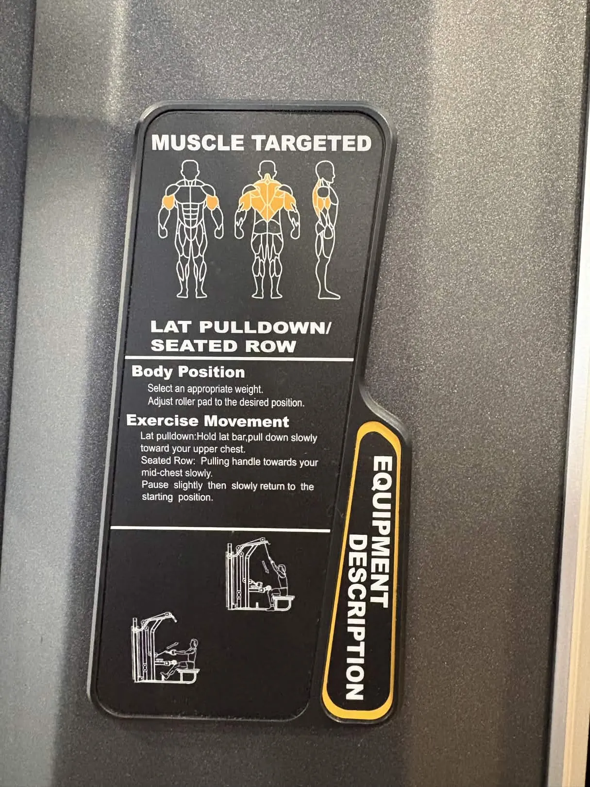
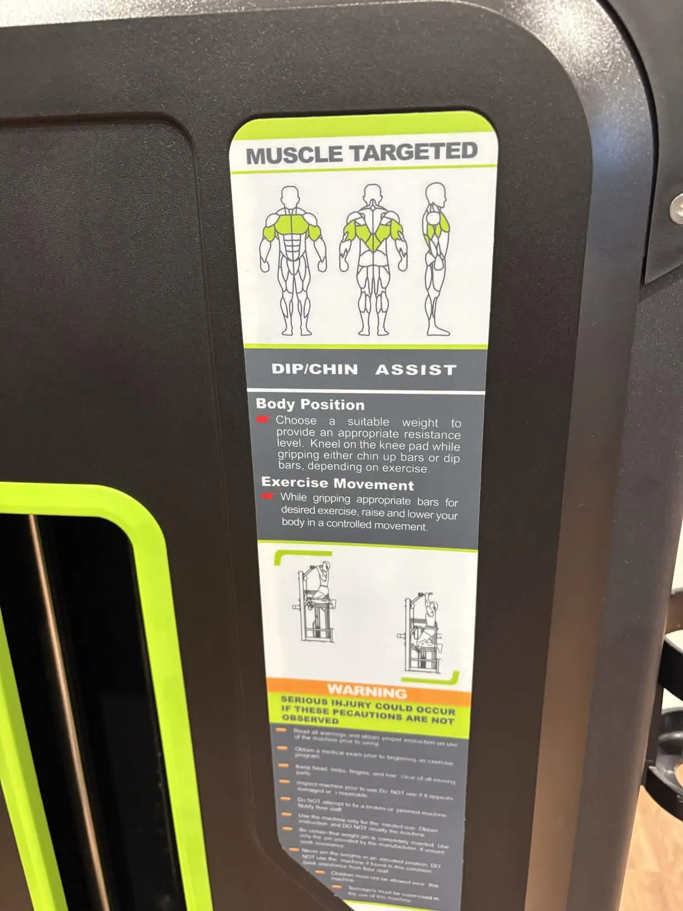
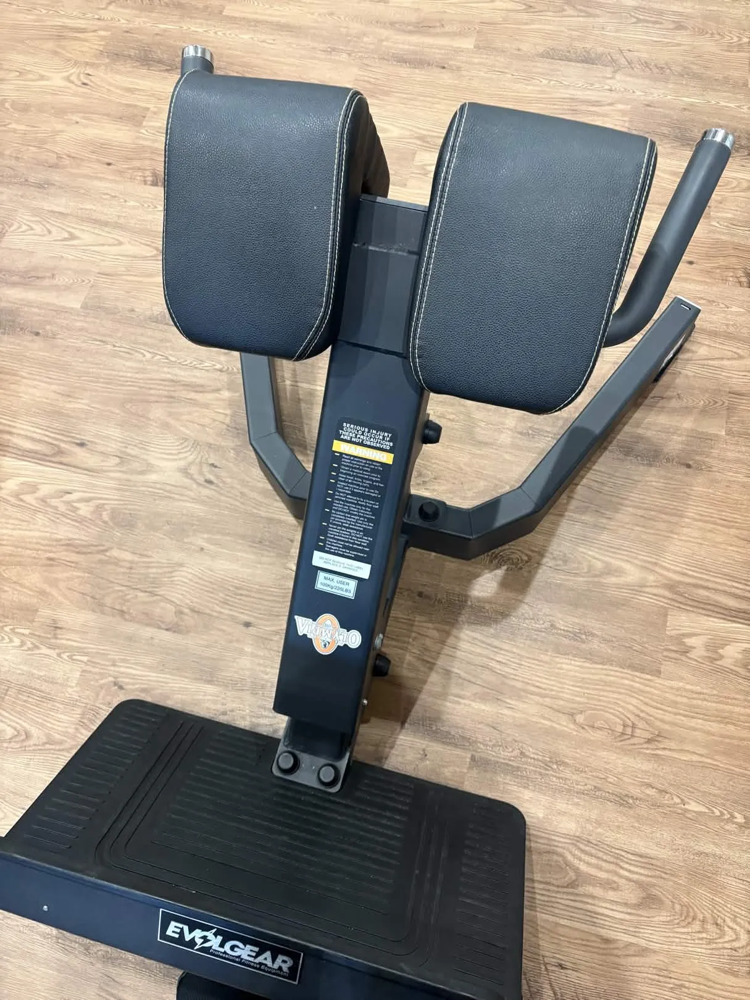
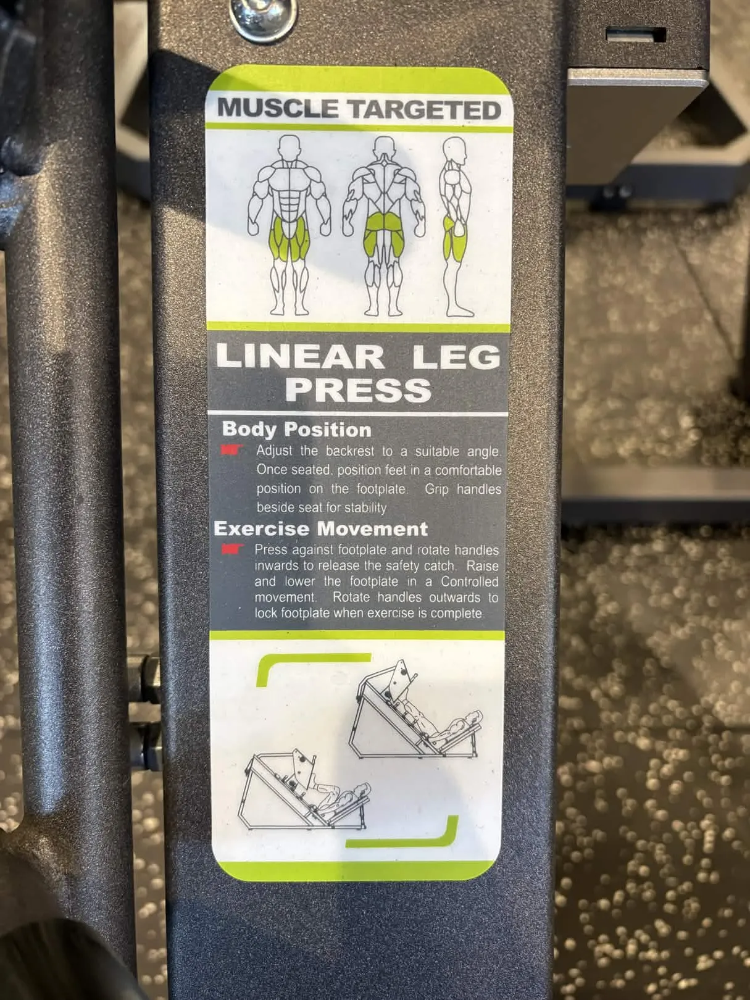
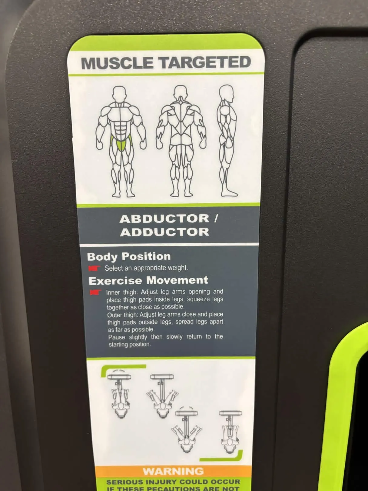
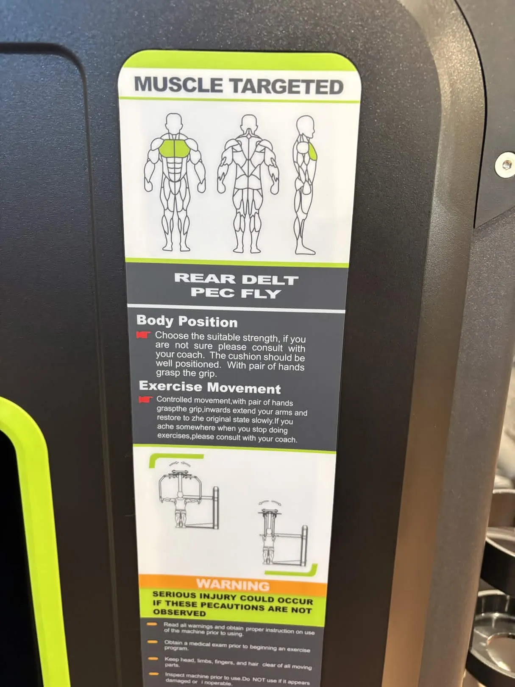

-10kgへの設計図。週3回のトレーニングで、体を変える。
MONDAY



WEDNESDAY


SATURDAY

ROADMAP
72kg → 62kg / 健康的なペースで約4〜5ヶ月
体重: 72kg → 70kg (-2kg)
筋肉痛が出るが徐々に慣れる。フォームを覚えることが最優先。食事の見直しを始める。この段階では体重が落ちなくても焦らない。
体重: 70kg → 67kg (-3kg)
筋肉がついて基礎代謝が上がる。重量を少しずつ増やせる。ランニングも楽になってくる。服のフィット感が変わり始める。
体重: 67kg → 65kg (-2kg)
下っ腹が目に見えて減る。体重の減少ペースはゆるやかになるが、体脂肪率は下がり続ける。見た目の変化が大きい時期。
体重: 65kg → 62kg (-3kg)
トレーニングが習慣化。重量も初期の1.5〜2倍に。下っ腹はかなりスッキリ。ここからは維持 + さらなるボディメイクへ。